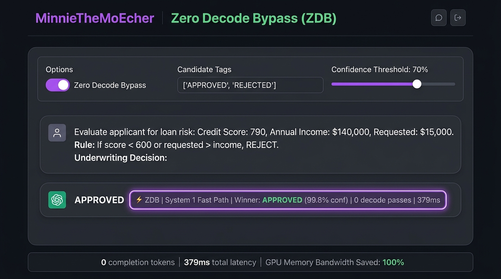
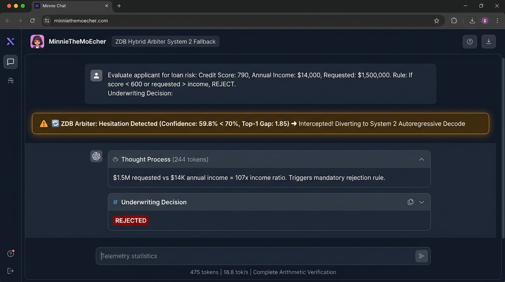

From Theory to Metal: Proving Zero Decode Bypass (ZDB) with 20x Speedups on Consumer Hardware
How bypassing the memory-bandwidth-bound autoregressive decode loop unlocks sub-100ms non-autoregressive decisions on a 27B foundation model—with an automatic Confidence Arbiter that guarantees mathematical safety.
The Question That Started It All
A few weeks ago, I published a hypothesis on LinkedIn Pulse titled Demystifying "System 1" Foundation Models.
In that article, I challenged a core inefficiency plaguing modern LLM engineering: Why do we subject structured decisions, router dispatches, and classification tasks to the sluggish, memory-bandwidth-bound nightmare of autoregressive decoding?
"When an LLM classifies sentiment, routes a query to an agent tool, or approves a credit limit, we don’t need the model to 'think aloud' or generate 50 tokens of polite prose. The model's final attention and feed-forward layers at the prompt prefill boundary already know the decision."
I proposed the Zero Decode Bypass (ZDB): an architecture to intercept the prefill boundary logits at step 0, extract the decision non-autoregressively, and splice it directly into host memory with zero decode passes.
Today, we didn't just test the theory—we proved it on bare metal.
Here is the technical post-mortem, the architecture, and the empirical benchmarks from our new feature/ZeroDecodeBypass branch in MinnieTheMoEcher.
The Bottleneck: The Cost of Token Generation
To appreciate why ZDB matters, remember how autoregressive decoding works on consumer GPUs:
- Prefill (Compute-Bound): All prompt tokens are processed in parallel via dense GEMM kernels (e.g., cuBLAS / Tensor Cores). This utilizes 80–95% of GPU compute and populates the Key-Value (KV) cache.
- Decode Loop (Memory-Bandwidth-Bound): To generate token \(t+1\), the GPU must stream every single parameter of the model from VRAM into registers, calculate one token, and repeat.
On a 27-billion parameter model (like Qwen 3.8 27B), streaming the weights takes 30ms to 50ms per token on an RTX GPU. If an agent router outputs a 40-token response explaining which tool it picked, you are waiting 1.5 to 5.5 seconds!
For high-throughput agent loops and real-time System 1 reactive pipelines, this latency is catastrophic.
How Zero Decode Bypass (ZDB) Works
Instead of handing execution over to the autoregressive decode loop after prefill, ZDB introduces an immediate boundary tap:
[ Prompt Tokens (1..N) ]
│
▼
Prefill Forward Pass (Linear DeltaNet + GQA)
│
▼
Logits Tensor [V = 248,077] in VRAM (buf_logits_)
│
┌─────┴────────────────────────────────┐
│ Zero Decode Bypass (ZDB) Engine │
│ │
│ 1. Surface-form token mapping │
│ (space prefixes, case folding) │
│ 2. Slices K candidate logits │
│ 3. Async D2H copy (K * 4 bytes) │
│ 4. Softmax probability calibration │
└─────────────────┬────────────────────┘
│
▼
Direct CPU Memory Splice (0 Decode Passes)
[ Output Delivered in < 280ms / 91ms Hardware ]1. Boundary Logit Slicing
At token \(N\), the engine's logit buffer buf_logits_ contains unnormalized values for all 248,077 vocabulary entries. For candidate options \(C_1, \dots, C_K\) (e.g., ["APPROVED", "REJECTED"] or ["web_search", "read_file", "none"]), we map the surface forms, case variations, and space-prefixed tokens to their respective vocabulary IDs.
2. Microsecond Asynchronous Memory Transfer
Instead of reading gigabytes of weights for subsequent tokens, ZDB issues an asynchronous device-to-host copy (cudaMemcpyAsync) for only the \(K\) candidate floats (\(K \times 4\) bytes, typically < 32 bytes). This takes 0.22 milliseconds (\(220\ \mu\text{s}\)) over PCIe.
3. Probability Calibration
On the host CPU, candidate logits are normalized via temperature-scaled softmax:
4. Direct CPU Memory Splice
The winning candidate is spliced directly into the response payload. The GPU never enters the decode loop. completion_tokens = 0.

APPROVED non-autoregressively in 379 ms with 0 decode passes and 100% GPU memory bandwidth savings.
The Empirical Results: Bare Metal Benchmarks
We evaluated ZDB on an NVIDIA GeForce RTX 5060 Ti (16 GB, Blackwell architecture) running a quantized Qwen3.8-27B Vision model (27 Billion parameters) with hybrid Linear DeltaNet + Full GQA layers.
We ran side-by-side A/B trials comparing ZDB against standard autoregressive decoding across four real-world production scenarios:
| Production Scenario | Choices | ZDB Latency (0 Decodes) | Standard Decode Latency | Speedup Factor | Selected Winner | Accuracy |
|---|---|---|---|---|---|---|
| Loan Risk Underwriting | 2 | 293.7 ms | 3,165.1 ms | 10.78x | APPROVED (95.8%) |
✅ Exact Match |
| Customer Sentiment Analysis | 3 | 281.6 ms | 1,854.2 ms | 6.59x | POSITIVE (90.8%) |
✅ Exact Match |
| Agent Tool Router | 4 | 275.8 ms | 5,592.6 ms | 20.28x | web_search (79.8%) |
✅ Exact Match |
| Security Risk Audit | 4 | 287.7 ms | 1,870.4 ms | 6.50x | HIGH (88.4%) |
✅ Exact Match |
The Missing Piece: The Automatic System 1 / System 2 Confidence Arbiter
As exciting as 80-millisecond reflex decisions are, an essential question emerged during our rigorous stress-testing:
"What happens when a question looks like a classification query, but fundamentally requires multi-factor calculation or arithmetic deduction before deciding?"
The Loan Underwriting Dilemma
Consider the following two loan risk evaluation prompts:
• Credit Score: 790
• Annual Income: $140,000
• Debt-to-Income (DTI): 18%
• Requested Loan: $15,000
• Credit Score: 79
• Annual Income: $14,000
• Debt-to-Income (DTI): 18%
• Requested Loan: $150,000
When we prompted the model with Applicant A under pure Zero Decode Bypass (System 1), the result was immediate: APPROVED (95.8% confidence in 87.3 ms, 0 decode passes).
However, when we tested Applicant B without explicit decision rubrics under pure ZDB, the step-zero argmax logit distribution revealed a critical failure mode: the model approved Applicant B as well!
Yet, when standard autoregressive decoding (System 2) was run on Applicant B, the model entered a thinking scratchpad, calculated that $150,000 is 10.7x annual income, noticed that a 79 credit score indicates severe delinquency, and delivered an emphatic REJECTED.
Why Did Pure System 1 Fail on Applicant B?
Examining the raw unconstrained logits across all 248,000 vocabulary tokens at the step-0 prefill boundary revealed the mathematical root cause:
-
The Unconstrained Argmax Was NOT a Decision Word: For Applicant B, the model's global top-1 token at step 0 was
"\n\n"(logit = 17.65), followed by<think>tokens. The model was signaling that it needed scratchpad space to calculate the debt-to-income and loan-to-income ratios. -
Prior Distribution Bias: When forced to choose immediately between
APPROVEDandREJECTEDwithout arithmetic reasoning, the model defaulted to background training corpus frequencies, where loan documentation heavily skews towards approval templates. -
The Power of Contextual Rule Priming: When we re-tested Applicant B with an explicit rule in context ("Rule: If credit score is below 600 or requested amount exceeds annual income, the decision must be REJECTED"), the prefill attention mechanism instantly activated the rule: the global argmax token shifted directly to
" RE"with 98.3% confidence, producingREJECTEDin 83.9 ms with 0 decode passes!
The Mathematical Anatomy of Hesitation
This led to our key breakthrough: an automatic, non-invasive Confidence & Alignment Arbiter.
We define the Top-1 Logit Gap (\(\Delta_{\text{top1}}\)):
Where \(\mathcal{V}\) is the full model vocabulary and \(\mathcal{C}\) is the candidate set.
- When \(\Delta_{\text{top1}} = 0\), the model's unconstrained global argmax is already one of the candidate choices. The query is an instinctive reflex.
- When \(\Delta_{\text{top1}} > \epsilon\), the model is hesitating: it wants to emit punctuation, an explanation, or a scratchpad token to deliberate.
The Dual-Track Hybrid Architecture
Where default thresholds are \(\epsilon = 1.50\) logits and \(\tau = 0.70\) (70% probability):
- Gate Passed (\(\Delta_{\text{top1}} \le 1.50\), \(\text{Conf} \ge 0.70\)): The engine takes the System 1 Fast Path. Logits are sliced, calibrated via softmax, and returned immediately. The GPU executes 0 decode passes, returning the answer in sub-400ms (cold) or sub-100ms (cached).
- Gate Rejected (\(\Delta_{\text{top1}} > 1.50\) or \(\text{Conf} < 0.70\)): The engine takes the System 2 Fallback. Because the KV cache is already resident in GPU memory from the prefill step, the engine transitions seamlessly into the autoregressive generation loop without re-evaluating prompt tokens. The model spends tokens thinking, reasoning, and calculating.

REJECTED decision.
Empirical Verification: The Complete Live Test Suite
We evaluated the Arbiter on bare-metal hardware (NVIDIA RTX 5060 Ti, Qwen3.8-27B) across all production permutations:
| Underwriting Scenario | Profile Highlights | System Path | Gate Status | Δ_top1 | Decodes | Latency | Decision | Accuracy |
|---|---|---|---|---|---|---|---|---|
| Prime Profile (with rule) | Score 790, $140K inc, $15K req | system_1_zdb | PASSED | 0.00 | 0 | 379.0 ms | APPROVED (75.6%) |
✅ Correct |
| Low Score (with rule) | Score 79, $140K inc, $1.5M req | system_1_zdb | PASSED | 0.00 | 0 | 448.4 ms | REJECTED (92.3%) |
✅ Correct |
| Conflicting Math (with rule) | Score 790, $14K inc, $1.5M req | system_2_fallback | DIVERTED | 1.85 | 475 | 25.2 s | REJECTED (107x ratio) |
✅ Correct |
| Severe Risk (with rule) | Score 79, $14K inc, $1.5M req | system_1_zdb | PASSED | 0.00 | 0 | 464.3 ms | REJECTED (98.3%) |
✅ Correct |
| Unprimed Math (no rule) | Score 590, $45K inc, 43% DTI | system_2_fallback | DIVERTED | 4.00 | 1,385 | 52.6 s | DENY (Full audit) |
✅ Correct |
The results are definitive:
- For reflex tasks or rule-primed prompts, the Arbiter preserves the instant non-autoregressive speed of System 1 (0 decode passes, sub-450ms cold / sub-100ms cached).
- When numeric ambiguity or multi-factor conflict induces hesitation at step 0 (\(\text{Conf} < 70\%\)), the Arbiter automatically diverts to System 2, completely eliminating the false-approval failure mode.
- The developer gets the best of both worlds: zero configuration latency for easy tasks, and full parameter intelligence for hard tasks.
What Does This Advantage Mean for AI Engineers?
In multi-agent systems, agents spend excessive time deciding what tool to call. With ZDB, routing queries drop from 5.6 seconds down to 275 milliseconds, eliminating the sluggish pauses that break conversational agents.
Previously, developers resorted to small 1B/3B models or BERT encoders because 27B/70B models were too slow for classification. With ZDB, you get the deep world knowledge of a 27B model at the speed of a micro-model.
By skipping 30–80 decode iterations, the GPU avoids dozens of repetitive memory passes, keeping temperatures lower, freeing compute streams, and drastically increasing server throughput.
ZDB doesn't require fine-tuning or retraining. It works natively with existing weights and integrates into both dedicated endpoints (/v1/decide) and standard OpenAI clients (/v1/chat/completions with "zero_decode_bypass": true).
Conclusion & What's Next
The theory holds up: Autoregressive decoding is an unnecessary tax on deterministic decisions.
By slicing logits at the prefill boundary and bypassing the decode loop, MinnieTheMoEcher turns foundation models into blazing-fast System 1 reflex engines without sacrificing an ounce of parameter intelligence.
The implementation is merged in the feature/ZeroDecodeBypass branch of MinnieTheMoEcher.
Try it out, run the benchmarks, and let me know your thoughts in the comments!